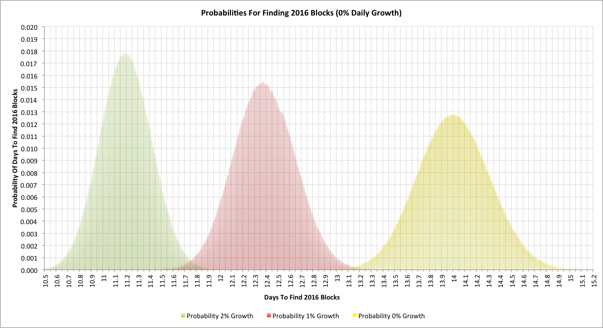

2016 blocks is the magic number that corresponds to each change in difficulty within the Bitcoin network. Nominally it should take 14 days to find this many blocks, but how long does it really take?
The simple case
In an earlier article, “Hash rate headaches", I looked at the probabilities of finding a particular number of blocks in a given time. This time around the goal is to work out how long it takes to find 2016 blocks.
To work out the behaviour I wrote a Monte-Carlo simulation that models the behaviour of mining during a 2016 block period. The simulation was run 10 million times in each run shown here in order to get good smoothing of the data.
Let’s start with the simple cases where the global hashing rate isn’t changing:

As we’d expect, the average time to find 2016 blocks is indeed 14 days. We can see the effects of the noise in the hashing design though and how once every 10 difficulty changes we’d be likely to see the time at +/- half a day (i.e. 13.5 days or less, or 14.5 days or more).
Practical complexities
Previously, I’ve talked about how Bitcoin hashing is a Poisson process. @coinometrics pointed out on Twitter that things become more complex when the hashing rate is expanding because it then becomes a non-homogeneous (or inhomogeneous) Poisson process. Towards the end of the difficulty change we’re going to see blocks being found faster than at the start. The observation is, of course, quite correct and the simulations here now account for that. The assumption is that hashing capacity comes online at a steady exponentially expanding rate, so, say, the hashing capacity assumed at 5 days is larger than that at 4.9 days, irrespective of the number of blocks found.
Another complication is that the current difficulty level doesn’t really indicate the the actual hashing rate of the network even on the day it’s first set. In the article, “Lies, damned lies and Bitcoin difficulties", I showed that a more accurate starting measure was to multiple the new difficulty by the square root of the difficulty increase. The simulations account for this too.
Let’s see what happens when we have a 1% daily hashing rate expansion:
With a 1% daily expansion rate we now typically find our 2016 blocks after 12.37 days (a little under 12 days, 9 hours). It also equates to a difficulty increase of 13.1%.
Now let’s look at a 2% daily hashing rate increase:
With a 2% daily expansion rate we now typically find our 2016 blocks after 11.19 days (a little over 11 days, 4.5 hours). This equates to a difficulty increase of 24.8%.
It’s interesting to note that doubling the hashing rate expansion per day doesn’t correspond to doubling the next difficulty change because we get to the next change quicker and thus compensate faster too.
The numbers also have an interesting implication for the block reward halving dates though as the dates move closer all the time.
Putting it all together
Here’s a final chart. This shows the 3 earlier charts superimposed on each other:

It’s worth noticing the effect of noise again. The overlaps between the 2% and 1% expansion rate are pretty clear. When we see a difficulty change at 11.75 days are we really seeing the effect of 13.1% extra hashing capacity, 24.8%, or more likely somewhere inbetween? It could be even more divergent though!
Over the last few days there has been much discussion about the GHash.IO mining pool’s hashing rate. It clearly has a very substantial fraction but the error margins even across an entire 2016 block period are surprisingly large. As ever Bitcoin statistics often lead to more questions than answers!